Neste guia, vamos explorar como conectar servidores MCP ao n8n, utilizando inteligência artificial para otimizar seu design frontend. Se você está pronto para mergulhar no desenvolvimento com design AI, este tutorial passo a passo é para você!
Índice
- Passo 1: O Que Vamos Cobrir 🚀
- Passo 2: Visão Geral do Auto-Hospedagem 🏠
- Passo 3: Instalando o Node da Comunidade MCP ⚙️
- Passo 4: Conectando-se a um Servidor MCP 🌐
- Passo 5: Exemplo de Uso com Airbnb MCP 🏡
- Passo 6: Dando Acesso a Agentes em Servidores MCP 🔑
- Passo 7: Usando a Ferramenta de Execução do Agente MCP 🛠️
- Passo 8: Exemplo de Busca com Brave Search MCP 🔍
- Passo 9: Limitações Atuais do Node da Comunidade MCP ⚠️
- Passo 10: Resolvendo Problemas Comuns com Servidores MCP 🛠️
- Passo 11: Considerações Finais sobre o Desenvolvimento com MCP 🤔
- Passo 12: Dicas para uma Implementação de Sucesso 💡
- Passo 13: Conclusão e Próximos Passos 🔚
- FAQ: Perguntas Frequentes sobre MCP e n8n ❓
Passo 1: O Que Vamos Cobrir 🚀
Hoje, vamos abordar o processo completo de configuração para conectar servidores MCP ao n8n. Vamos explorar como você pode auto-hospedar sua instância, instalar o nó da comunidade e configurar tudo de forma simples e direta.
O foco principal será em como utilizar a inteligência artificial no desenvolvimento frontend design ai para otimizar suas operações. Mas não se preocupe, não será necessário abrir um terminal ou digitar comandos complicados. Tudo será feito através da interface do n8n.
Além disso, vamos discutir as limitações atuais dos nós MCP e os desafios que você pode encontrar ao escalar esses agentes. Então, vamos lá!
Passo 2: Visão Geral do Auto-Hospedagem 🏠
Auto-hospedar sua instância n8n é uma maneira eficiente de ter controle total sobre seus dados e operações. Existem várias plataformas que permitem essa configuração, mas escolhemos a Elestio pela sua simplicidade em gerenciar software de código aberto.
Com a Elestio, você pode implantar sua instância n8n em poucos cliques, sem a necessidade de conhecimentos avançados em DevOps. A plataforma cuida da instalação, configuração, segurança, backups e atualizações automaticamente.
Além disso, a Elestio é compatível com SOC 2 e GDPR, o que garante que você está operando em conformidade com as normas de segurança e privacidade de dados.
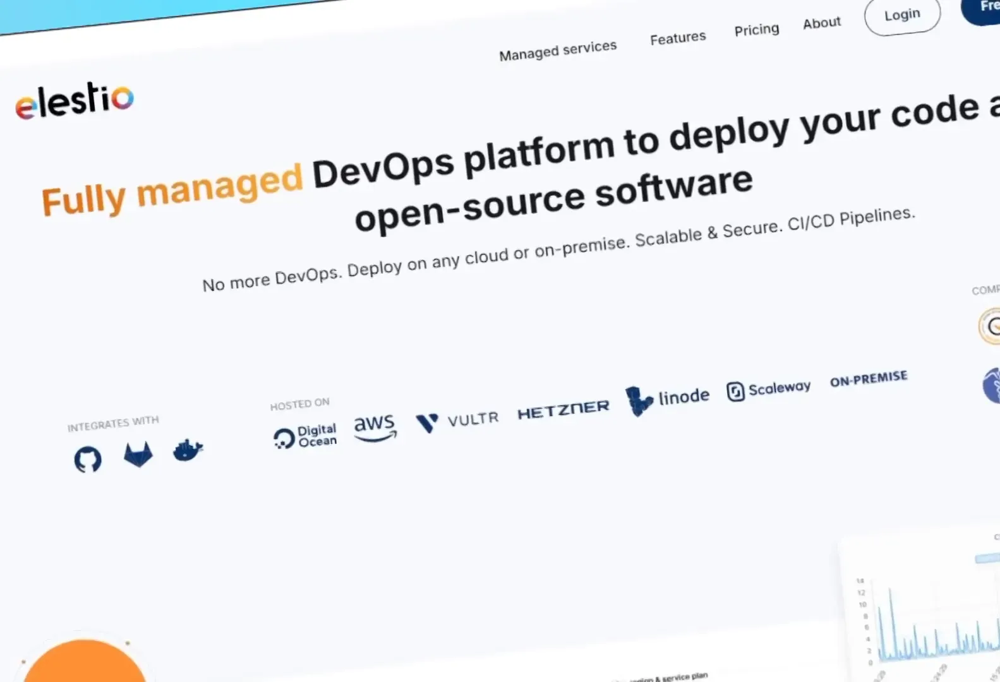
Passo 3: Instalando o Node da Comunidade MCP ⚙️
Após configurar sua instância, o próximo passo é instalar o nó da comunidade MCP. Para fazer isso, navegue até as configurações do n8n e vá até a seção de nós comunitários. É aqui que você terá a opção de instalar o nó MCP.
Você precisará copiar o comando n8n-nodes-mcp e colá-lo na interface de instalação do nó comunitário. Isso é tudo! Após a instalação, você verá o nó MCP disponível para uso em seus fluxos de trabalho.
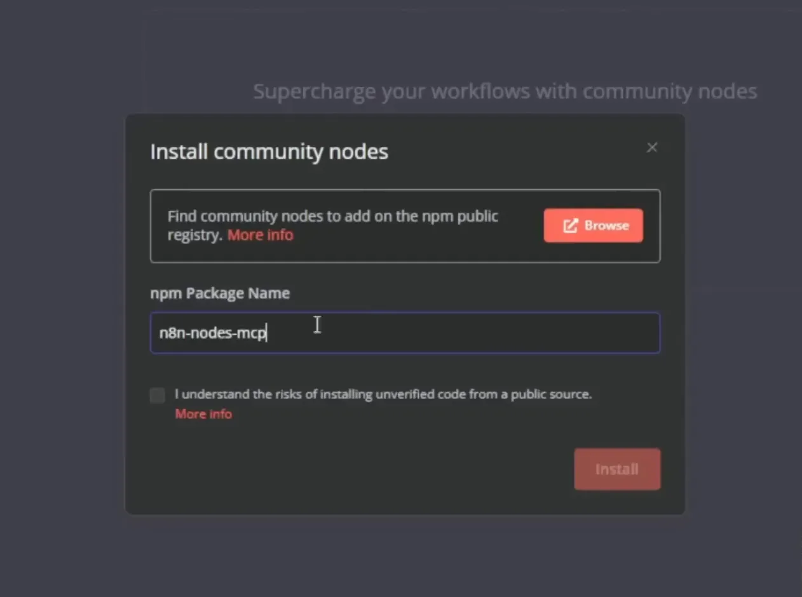
Lembre-se também de subir nas variáveis de ambiente a variavel abaixo como TRUE:
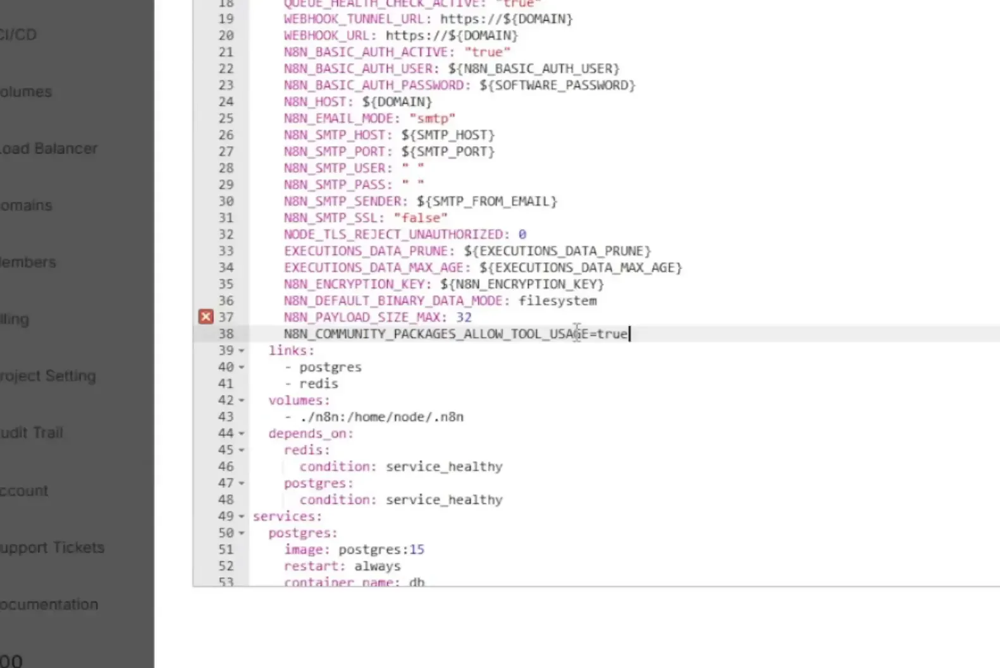
Passo 4: Conectando-se a um Servidor MCP 🌐
Com o nó instalado, o próximo passo é se conectar a um servidor MCP. Você pode escolher entre diversos servidores disponíveis. Um dos mais acessíveis é o Airbnb, que não requer uma chave de API para começar.
Ao acessar a documentação do servidor MCP do Airbnb, você encontrará as instruções necessárias para configurar a conexão. O comando será semelhante a npx -y openbnb ignore-robots-txt, que irá permitir o acesso ao servidor sem complicações.
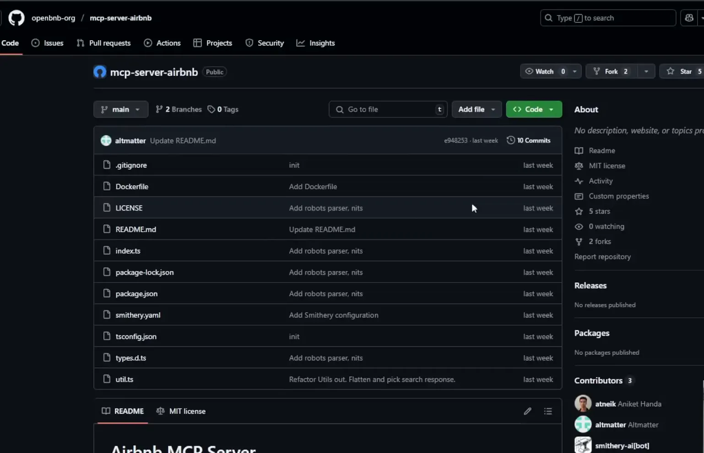
Passo 5: Exemplo de Uso com Airbnb MCP 🏡
Agora que você está conectado ao servidor Airbnb, vamos ver um exemplo prático de como utilizar esse recurso. Primeiro, você pode listar as ferramentas disponíveis no servidor. Ao fazer isso, você deve ver opções como Airbnb Search e Airbnb Listing Details.
Para realizar uma busca, você precisará configurar um nó de cliente MCP e definir o nome da ferramenta que deseja usar, como Airbnb_search. Em seguida, insira os parâmetros necessários, como a localização.
Após configurar, basta executar o nó e você verá os resultados da busca diretamente no seu fluxo de trabalho. Isso demonstra como a integração entre a inteligência artificial e a automação pode otimizar sua experiência de desenvolvimento.
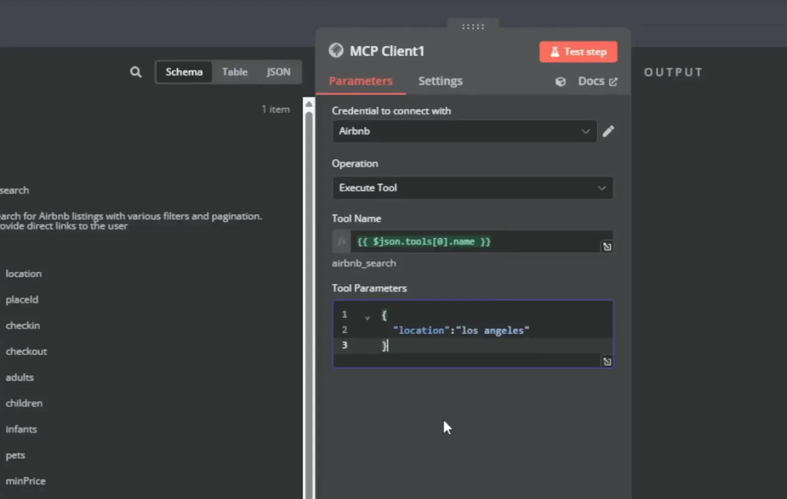
Passo 6: Dando Acesso a Agentes em Servidores MCP 🔑
Para permitir que seus agentes acessem servidores MCP, você precisa configurar as credenciais corretamente. Isso envolve a criação de um novo credencial para o seu servidor específico, como fizemos anteriormente com o Airbnb.
Primeiro, acesse a seção de credenciais no n8n. Crie uma nova credencial e insira o comando necessário que conecta o seu agente ao servidor MCP desejado.
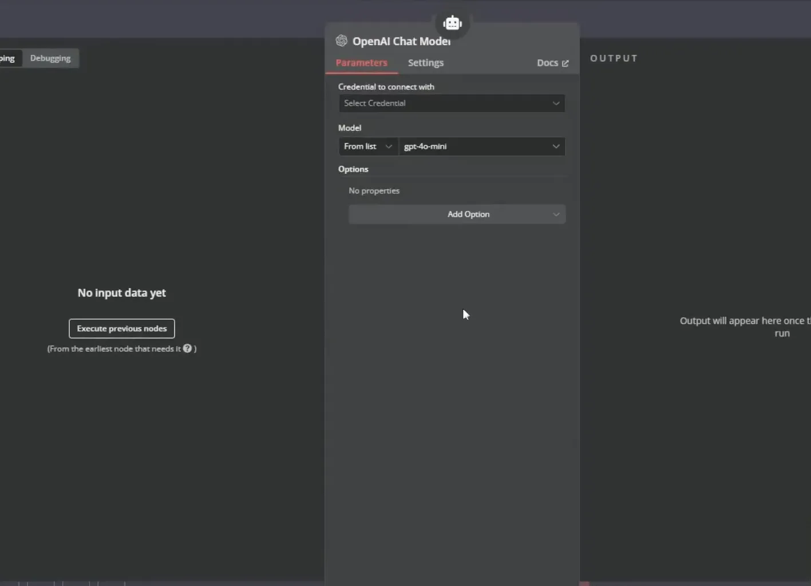
Configurando o Chat Model
Em seguida, você deve conectar um modelo de chat ao seu agente. Para isso, utilize a API do OpenAI. Crie uma nova chave de API e insira-a na seção de credenciais do n8n.
Uma vez que a chave estiver configurada, escolha um modelo, como o gpt-4-turbo, que é ideal para tarefas de processamento de linguagem natural.
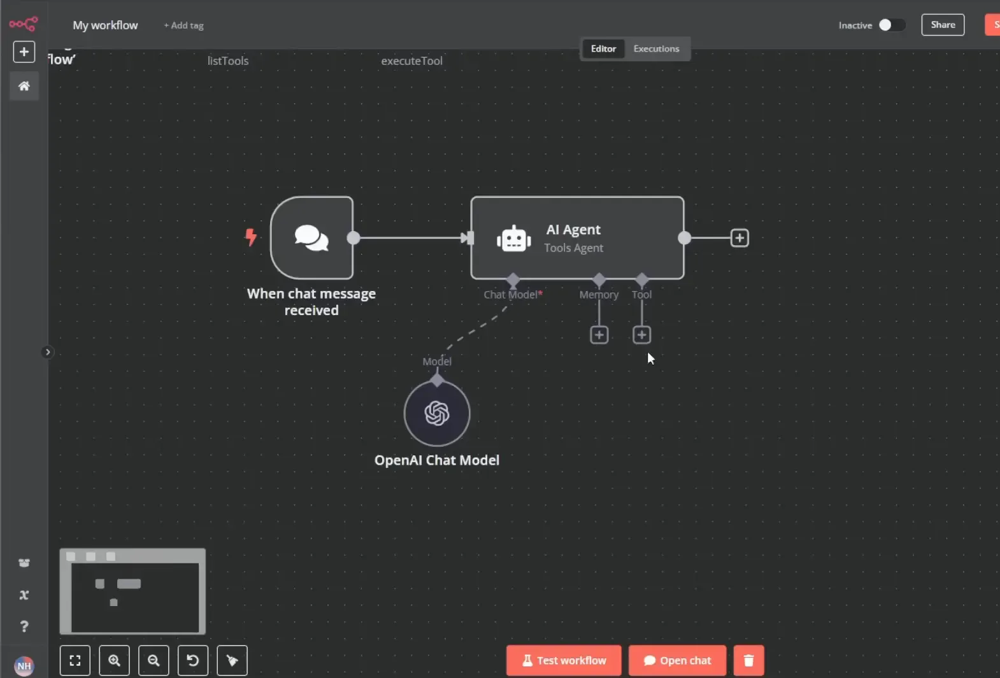
Passo 7: Usando a Ferramenta de Execução do Agente MCP 🛠️
Após configurar o acesso do agente, o próximo passo é usar a ferramenta de execução do agente MCP. Isso permite que o agente execute ações específicas definidas através dos comandos do MCP.
Para isso, crie um novo fluxo de trabalho e adicione um nó que utilize o cliente MCP. Selecione a operação de execução da ferramenta e configure os parâmetros necessários.
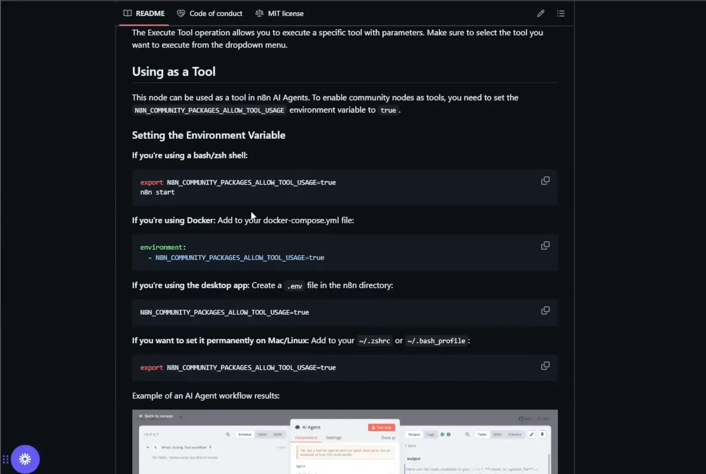
Definindo Parâmetros Dinâmicos
É crucial que os parâmetros que você passa para a ferramenta sejam dinâmicos. Utilize expressões que permitam ao agente decidir qual ferramenta usar com base nas entradas do usuário.
Por exemplo, você pode configurar o nome da ferramenta como uma expressão, onde o agente pode determinar qual função utilizar, como Airbnb_search ou Brave_web_search.
Passo 8: Exemplo de Busca com Brave Search MCP 🔍
Agora vamos ver como executar uma busca usando o MCP do Brave Search. Primeiro, você precisará garantir que as credenciais estão configuradas corretamente, assim como fizemos anteriormente com o Airbnb.
Depois de configurar a busca, adicione um nó de cliente MCP e defina a operação para executar ferramenta. Para a ferramenta, escolha Brave_web_search.
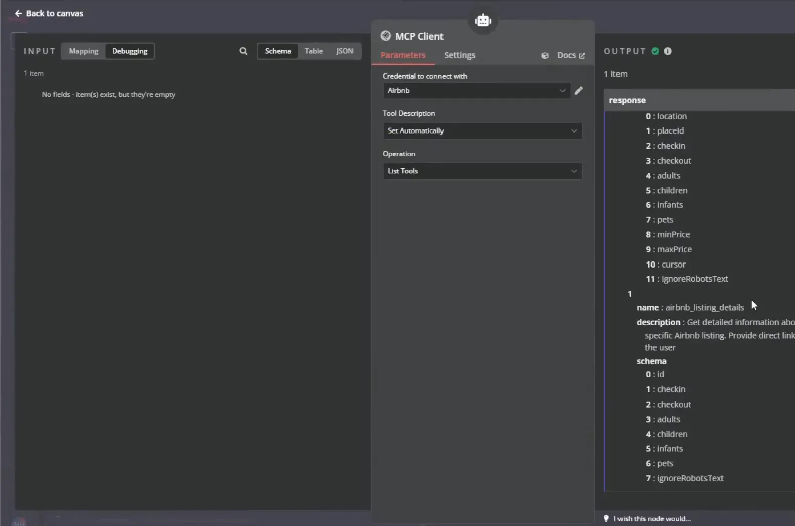
Configurando a Busca
Ao configurar a busca, você deve passar os parâmetros necessários, como a consulta que deseja realizar. Por exemplo, se você estiver buscando informações sobre inteligência artificial desenvolvimento frontend design ai, insira essa frase como seu parâmetro de busca.
Após configurar tudo, execute o nó e veja os resultados retornados pelo Brave Search. Isso demonstra como a integração entre o n8n e servidores MCP pode facilitar a automação e a busca de informações.
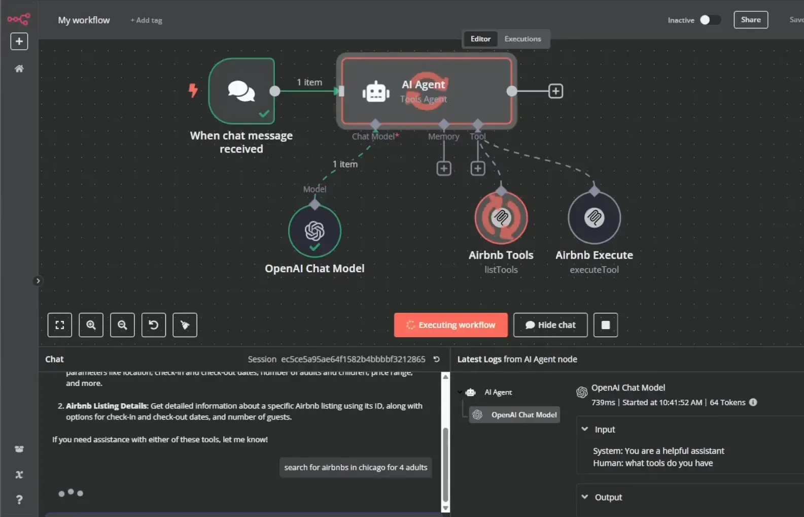
Passo 9: Limitações Atuais do Node da Comunidade MCP ⚠️
Embora a integração com servidores MCP seja poderosa, existem algumas limitações que você deve estar ciente. Primeiramente, nem todos os servidores MCP oferecem a mesma funcionalidade ou suporte.
Alguns servidores podem ter restrições em termos de número de requisições que podem ser feitas, ou podem não suportar determinadas operações que você deseja realizar.
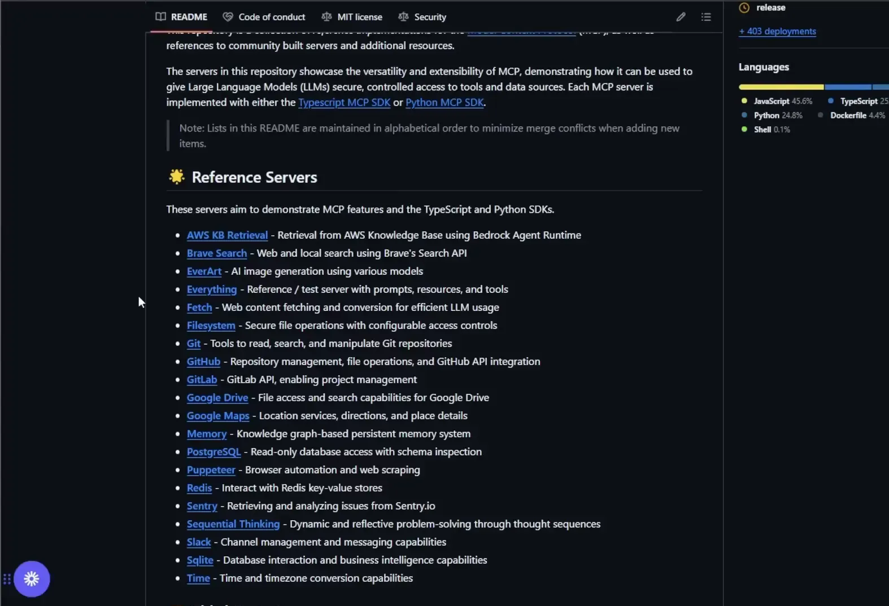
Problemas Comuns
- Conexões Interrompidas: Às vezes, a conexão com o servidor pode falhar, resultando em erros ao tentar executar ferramentas.
- Parâmetros Inválidos: Certifique-se de que os parâmetros que você está passando estão corretos e compatíveis com o que o servidor espera.
- Limitações de Taxa: Fique atento às limitações de taxa impostas por alguns servidores, que podem restringir o número de requisições em um determinado período.
Passo 10: Resolvendo Problemas Comuns com Servidores MCP 🛠️
Se você encontrar problemas ao usar servidores MCP, aqui estão algumas dicas para resolução:
- Verifique as Credenciais: Sempre comece verificando se suas credenciais estão corretas e se você tem acesso ao servidor desejado.
- Leia a Documentação: A documentação do servidor frequentemente contém informações valiosas sobre como configurar corretamente suas requisições e parâmetros.
- Teste Individualmente: Se você está enfrentando erros, teste cada parte do fluxo de trabalho individualmente para identificar onde o problema pode estar ocorrendo.
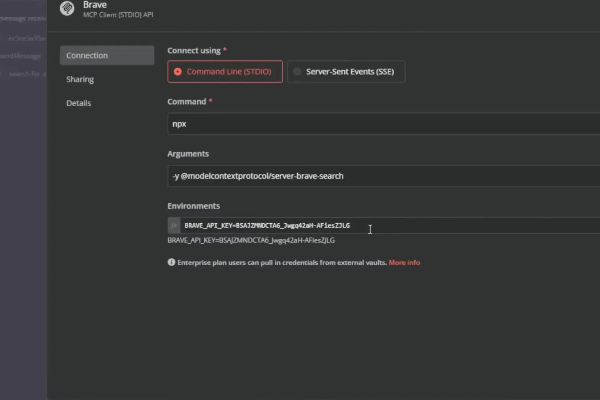
Com essas orientações, você estará mais preparado para lidar com os desafios que podem surgir ao trabalhar com servidores MCP. A integração com a inteligência artificial no desenvolvimento frontend design ai pode ser incrivelmente eficaz, mas é importante estar ciente das limitações e saber como superá-las.
Passo 11: Considerações Finais sobre o Desenvolvimento com MCP 🤔
Ao finalizarmos este guia, é vital refletir sobre as lições aprendidas ao conectar servidores MCP ao n8n. A integração de diferentes servidores pode parecer desafiadora, mas, com as ferramentas certas e um entendimento claro do processo, você pode transformar essa tarefa em uma experiência fluida.
A utilização de servidores MCP não é apenas uma questão técnica, mas também envolve a compreensão das melhores práticas para garantir que suas integrações sejam eficientes e escaláveis. A inteligência artificial desempenha um papel crucial aqui, ajudando a otimizar as operações e a personalizar a experiência do usuário.
Além disso, ao trabalhar com a inteligência artificial no desenvolvimento frontend design ai, você deve estar ciente das limitações e dos potenciais obstáculos que podem surgir. Isso não deve desencorajá-lo, mas sim motivá-lo a explorar e experimentar novas maneiras de utilizar essas tecnologias.
Passo 12: Dicas para uma Implementação de Sucesso 💡
Para garantir que sua implementação de servidores MCP seja bem-sucedida, considere as seguintes dicas:
- Planejamento: Antes de começar, defina claramente os objetivos que você deseja alcançar com a integração. Ter uma visão clara ajudará a orientar suas ações.
- Documentação: Sempre consulte a documentação dos servidores MCP que você está utilizando. Isso pode economizar tempo e evitar frustrações.
- Teste e Valide: Faça testes rigorosos para validar suas integrações. Isso ajuda a identificar problemas antes que eles se tornem críticos.
- Feedback do Usuário: Coletar feedback de usuários pode fornecer insights valiosos sobre como melhorar suas implementações.
- Atualizações Regulares: Mantenha suas instâncias e ferramentas atualizadas para garantir que você esteja utilizando as últimas funcionalidades e melhorias de segurança.
Seguindo essas dicas, você estará mais bem preparado para enfrentar os desafios do desenvolvimento e maximizar o potencial dos servidores MCP em suas aplicações.
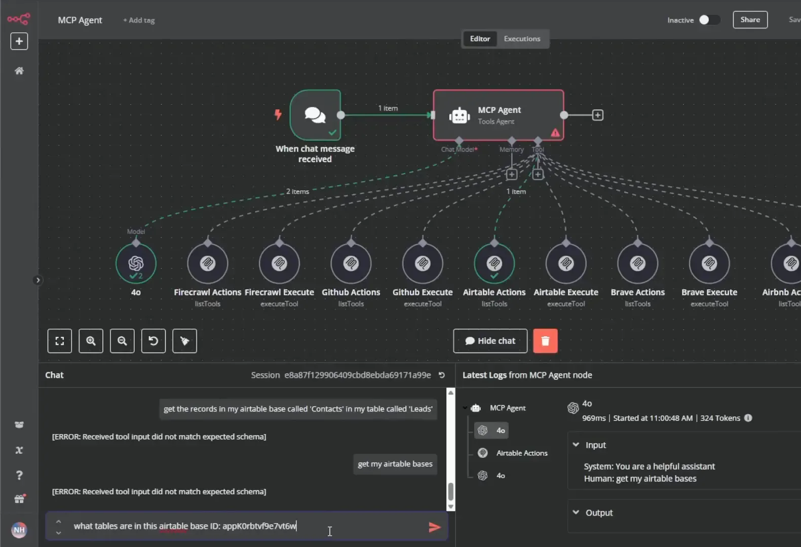
Passo 13: Conclusão e Próximos Passos 🔚
Chegamos ao final deste guia, mas sua jornada no desenvolvimento com servidores MCP e n8n está apenas começando. A integração de inteligência artificial em seu design frontend é uma oportunidade emocionante para inovar e criar soluções que realmente fazem a diferença.
Agora que você possui as ferramentas e conhecimentos necessários, o próximo passo é aplicar o que aprendeu. Experimente diferentes servidores MCP, crie fluxos de trabalho complexos e não tenha medo de explorar novas ideias. O céu é o limite!
Considere se juntar a comunidades de desenvolvedores que compartilham interesses semelhantes. O aprendizado colaborativo é uma excelente maneira de se manter atualizado sobre as últimas tendências e melhores práticas.
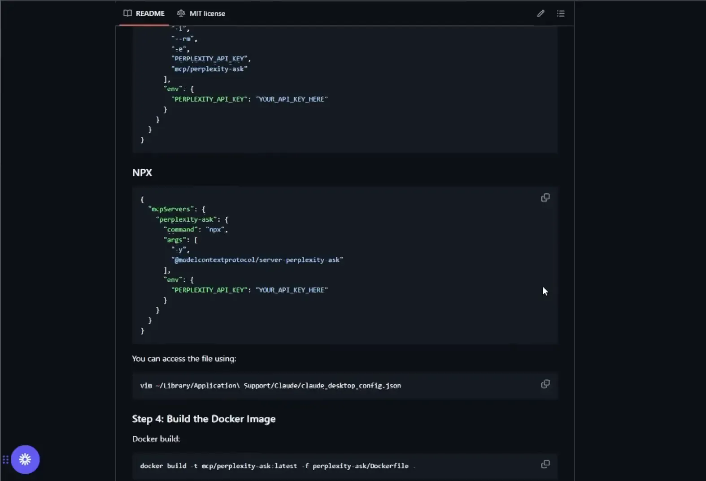
FAQ: Perguntas Frequentes sobre MCP e n8n ❓
- O que é MCP?
O MCP (Multi-Channel Protocol) é uma abordagem que permite a integração de diferentes servidores e serviços para otimizar operações e fluxos de trabalho. - Posso usar MCP sem conhecimentos técnicos?
Sim! Com ferramentas como n8n, você pode configurar e gerenciar integrações sem precisar de habilidades avançadas em programação. - Quais são algumas limitações do MCP?
A principal limitação é que nem todos os servidores oferecem a mesma funcionalidade. É importante verificar a documentação para entender as capacidades de cada um. - Como posso escalar meus agentes MCP?
Escalar agentes envolve otimizar suas configurações e garantir que você esteja utilizando recursos adequados para suportar a carga de trabalho. - Onde posso encontrar mais recursos sobre n8n e MCP?
Existem diversas comunidades online, cursos e tutoriais que podem ajudá-lo a aprofundar seu conhecimento sobre esses tópicos.
Esperamos que este guia tenha fornecido as informações necessárias para você começar sua jornada com servidores MCP e n8n. Boa sorte e divirta-se explorando o potencial da inteligência artificial no desenvolvimento frontend design ai!
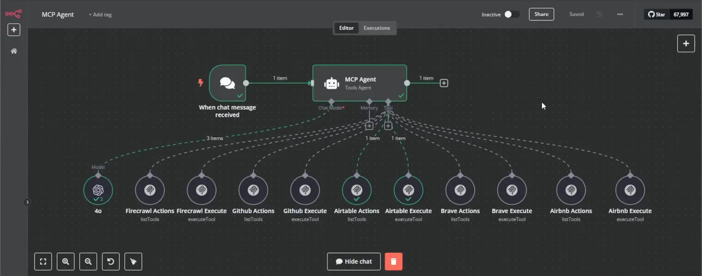